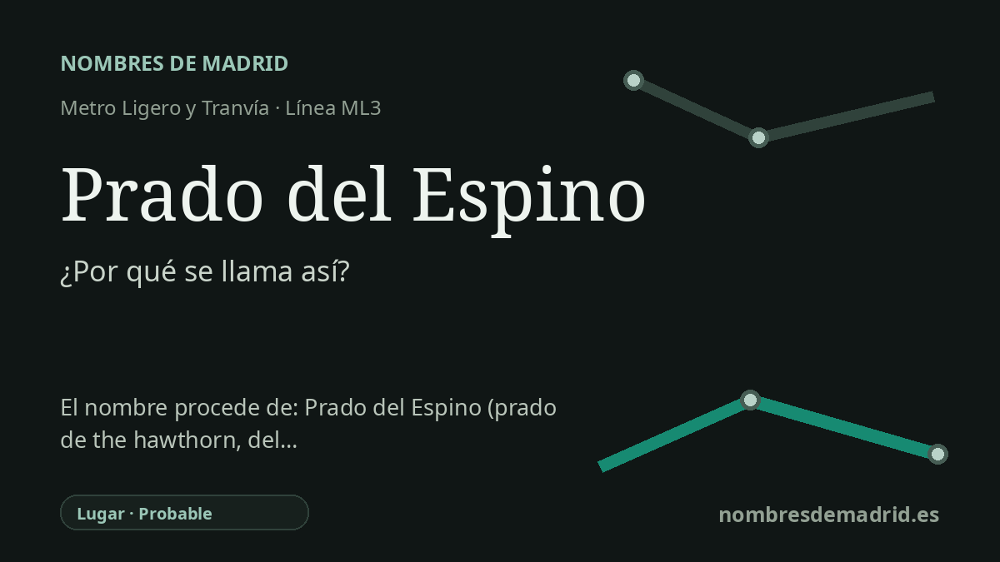

Publicado el · Investigación de Nombres de Madrid · Cómo verificamos cada origen · 8 fuentes consultadas
Respuesta rápida
Prado del Espino toma su nombre del área de Prado del Espino de Boadilla del Monte, donde la parada de ML3 se sitúa en la calle Labradores. El nombre significa literalmente un prado o pastizal del espino, árbol o arbusto espinoso asociado al espino blanco o majuelo.
La historia del nombre
La estación Prado del Espino toma su nombre del lugar donde se encuentra: el área de Prado del Espino, en Boadilla del Monte. El Consorcio Regional de Transportes de Madrid la identifica como estación en superficie con acceso en la calle Labradores, 1, dentro del entorno empresarial e industrial conocido con ese mismo nombre.
Las palabras remiten a un paisaje rural. La Real Academia Espanola define prado como una tierra húmeda o de regadío donde se deja crecer o se siembra hierba para pasto. Espino designa un árbol rosáceo espinoso, con flores blancas olorosas y fruto rojizo; en el uso común incluye el espino blanco o majuelo.
El topónimo no parece ser solo una etiqueta moderna del parque empresarial. La documentación urbanística municipal del Sector S.U.R. 1 "Prado del Espino" menciona el Barranco de Prado del Espino y explica que este arroyo nace en Boadilla del Monte entre el sector estudiado y el Polígono Industrial Prado del Espino, antes de dirigirse hacia el arroyo del Nacedero. Un anuncio oficial de 2024 de la Confederación Hidrográfica del Tajo cita igualmente el Arroyo Prado del Espino como cauce en Boadilla del Monte.
Esa evidencia hidrológica es importante porque muestra Prado del Espino como nombre de paisaje asociado a un cauce y a su entorno, no solo como marca de oficinas. El parque empresarial actual es una zona relevante de empleo junto a la Ciudad Financiera del Santander, y los documentos municipales de movilidad lo describen como un área de actividad económica con unas 150 empresas y más de 2.500 trabajadores. Nombres de calles como Artesanos, Forjadores e Impresores pertenecen ya a la urbanización posterior del ámbito.
La explicación más prudente es, por tanto, que la estación recibió el nombre del topónimo Prado del Espino ya existente, cuyo sentido literal es un prado o pastizal asociado al espino. Es razonable relacionar espino con el espino blanco o majuelo, pero las fuentes disponibles no documentan de forma directa por qué aquel prado o barranco recibió originalmente ese nombre vegetal. El nombre de la estación existe desde la apertura del servicio ML3 de Metro Ligero Oeste en julio de 2007.